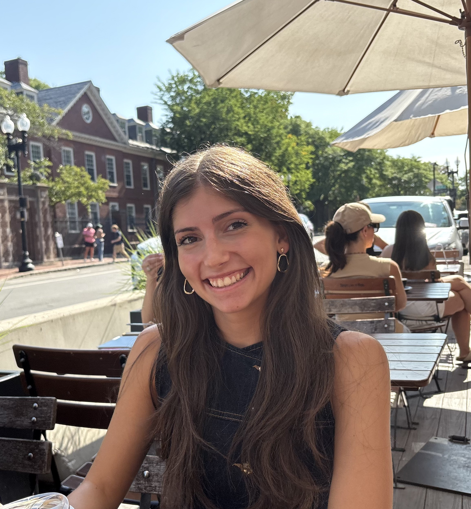
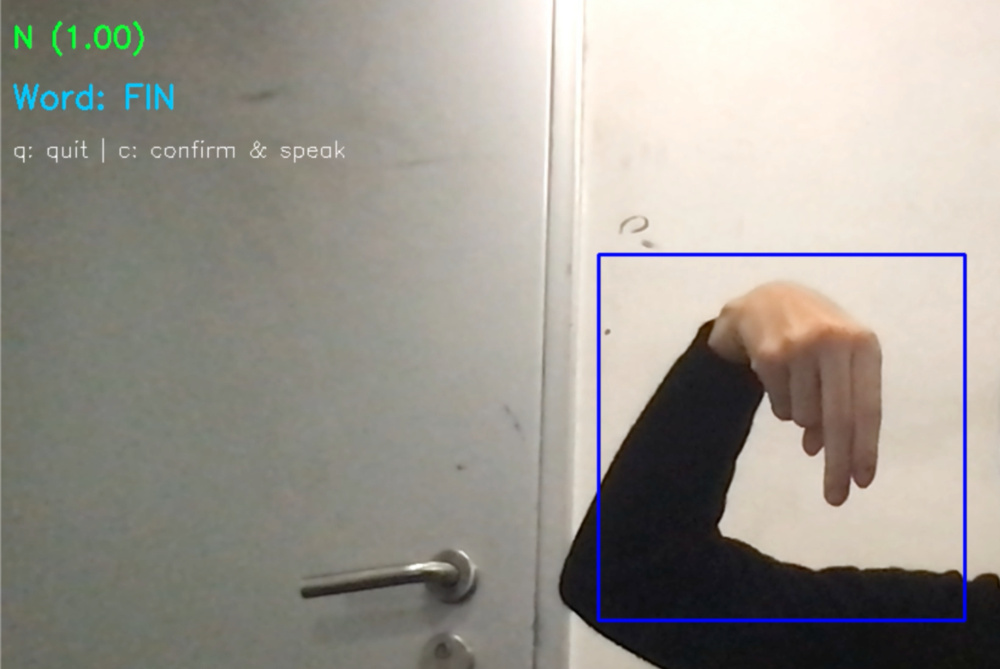
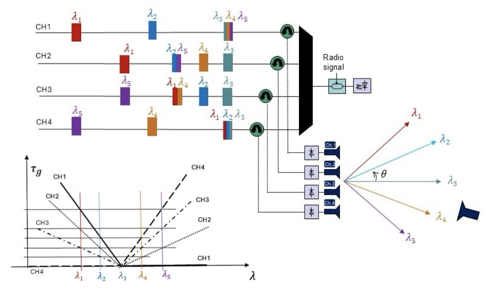
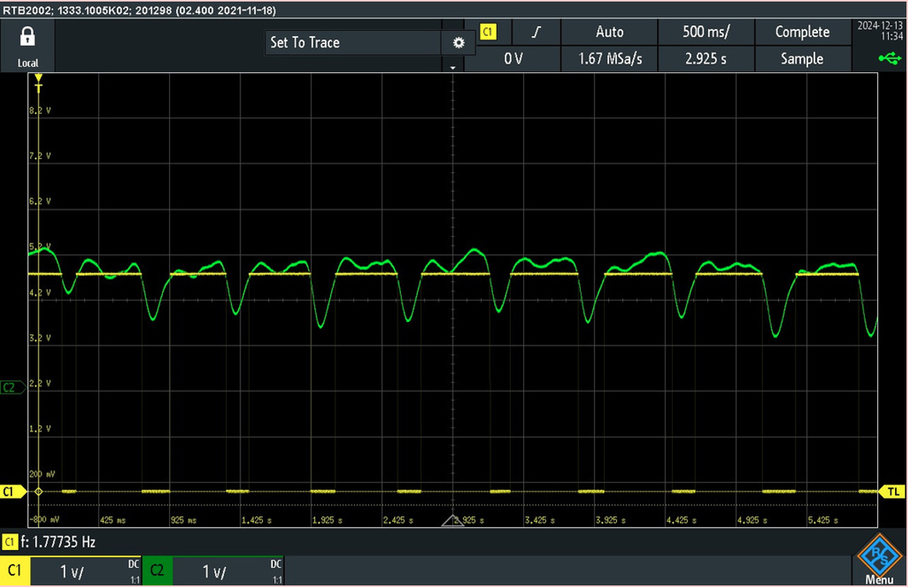
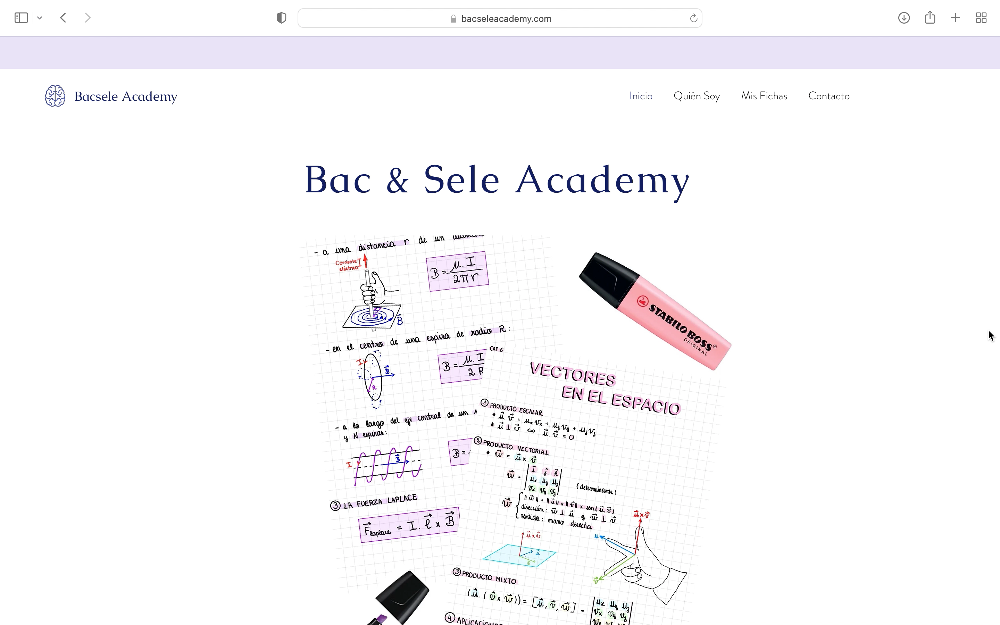

Leah Benarroch Jedlicki
MSc Data Science and Machine Learning student at University College London (UCL).
I previously studied Engineering Physics at Universitat Politècnica de Catalunya (UPC).
I'm interested in machine learning, artificial intelligence, computer vision and building intelligent systems.
Projects

Control Optimization of an Ultra-High-Precision Optical Thermometry System
Developed and experimentally validated a control model for an ultra-high-precision optical thermometry system based on a Whispering Gallery Mode Resonator, and optimized its control parameters to improve thermometric performance.
The work contributed to achieving nanokelvin-level precision for the first time with this system.
Bachelor’s Thesis grade: 10/10 · Presented at the 8th IEEC Forum

Signify: Real-Time Hand Gesture Recognition
Designed and implemented a real-time computer vision system that processes live webcam video for hand gesture recognition, translating model predictions into on-screen text and speech synthesis.

Photonic Beamforming for Phased Array Antennas
Designed and simulated a photonic beamforming system for phased array antennas using Fiber Bragg Gratings (FBGs), enabling precise, tunable and zero-latency delay control for beam steering.

Heart Rate Monitor
Developed a heart rate monitoring system using sensors and Arduino microcontroller programming to measure and display pulse rate with real-time feedback.

Bac Sele Academy
Created an educational website providing original study resources in Physics, Mathematics and Chemistry to help students prepare for the Spanish Selectividad and French Baccalauréat examinations.